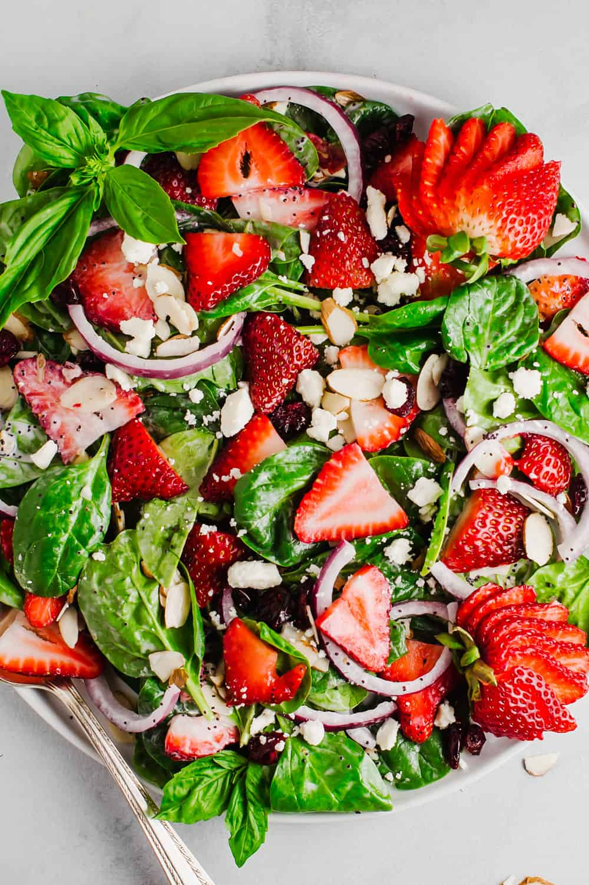

Strawberry Spinach Salad

This strawberry spinach salad is a great way to get kids to eat spinach! Someone brought this salad to a potluck dinner, and I had to have the recipe. Since then, I've made it many times and I've been asked for the recipe every time I take it somewhere.
- Prep Time: 10 minutes
- Additional Time: 1 hour 10 minutes
- Total Time: 1 hour 20 minutes
- Servings: 4
Ingredients
Dressing
- 1/2 cup white sugar
- 1/2 cup olive oil
- 1/4 cup distilled white vinegar
- 2 tbsp sesame seeds
- 1 tbsp poppy seeds
- 1 tbsp minced onion
- 1/4 tsp paprika
- 1/4 tsp Worcestershire sauce
Salad
- 1 qt strawberries - cleaned, hulled and sliced
- 10oz fresh spinach - rinsed, dried and torn into bite-size pieces
- 1/4 cup almonds, blanched and slivered
Directions
- Make dressing: Whisk together sugar, oil, vinegar, sesame seeds, poppy seeds, onion, paprika, and Worcestershire in a medium bowl. Cover and chill for 1 hour.
- Make salad:Combine strawberries, spinach, and almonds in a large bowl.
- Pour dressing over salad; toss to coat. Refrigerate for 10 to 15 minutes before serving.